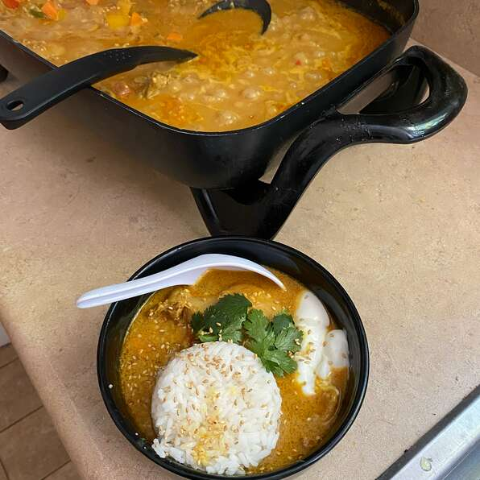

Peanut Chicken Curry

Description
A rich and bold chicken curry with some added heat bringing excitement to this dish.
Though it calls for a plethora of ingredients and steps, this results in a rewarding and delicious meal.
- 1 Tbsp Kosher Salt
- 2 Tsps Ground Coriander
- 2 Tsps Ground Cumin
- 1 Tsp Ground Turmeric
- 1 Tsp Paprika
- 1/2 Tsp Cayenne Pepper
- 2 1/2 Pounds Skinless, Boneless Chicken Thighs, Cut Into 2-Inch Pieces
- 2 Tbsps Vegetable Oil
- 1 Large Yellow Onion, Chopped
- 6 Cloves Garlic, Minced
- 1 Tbsp Finely Grated Fresh Ginger
- 3 1/2 Cups Chicken Broth
- 3/4 Cup Unsweetened Natural Peanut Butter
- 1/2 Cup Ketchup
- 1 Tbsp Packed Brown Sugar
- 1 Pound Zucchini, Cut Into Chunks
- 1 Red Bell Pepper, Cut Into Chunks
- 1 Green Poblano Pepper, Diced
- 2 Cups Hot Cooked Rice
- 1 Lime, For Garnish
- Mix salt, coriander, cumin, turmeric, paprika, and cayenne pepper together in a small bowl.
- Place chicken pieces in a separate bowl and add 1/2 of the spice blend. Mix together thoroughly to coat each surface with spice blend.
- Heat oil over high heat in a heavy pot. Brown half of the chicken pieces on all sides. Transfer to a bowl. Repeat with the rest of the chicken.
- Reduce heat to medium and add onion to pot. Saute until onions start to turn translucent and golden, 1 or 2 minutes.
- dd garlic and ginger; cook about 1 minute. Stir in remaining spice blend; cook and stir one minute.
- Pour in chicken broth. Add browned chicken along with accumulated juices. Stir in peanut butter and ketchup; add brown sugar. Bring to a simmer and reduce heat to maintain a gentle, steady simmer. Simmer, stirring occasionally, about 30 minutes.
- Transfer zucchini, red bell pepper, poblano pepper, and peanuts to the pot. Stir to mix. Continue simmering until chicken and vegetables are fork tender, 30 to 40 minutes. Remove from heat.
- Serve over rice with a squeeze of lime.